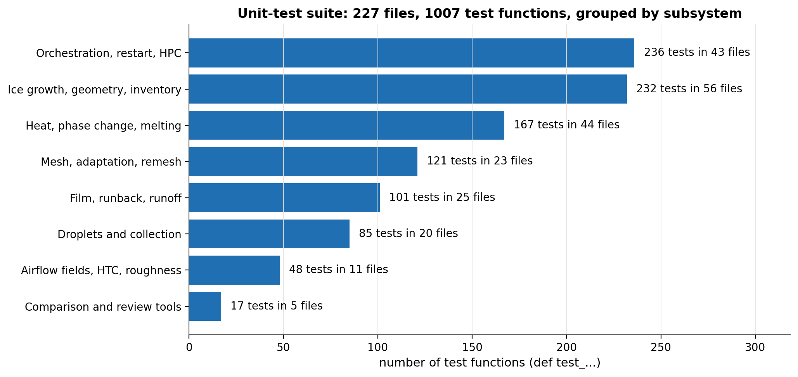
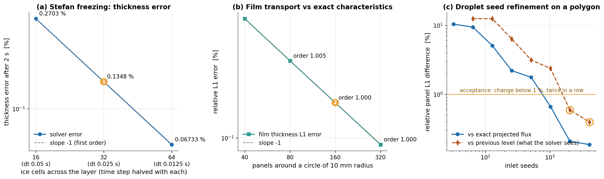
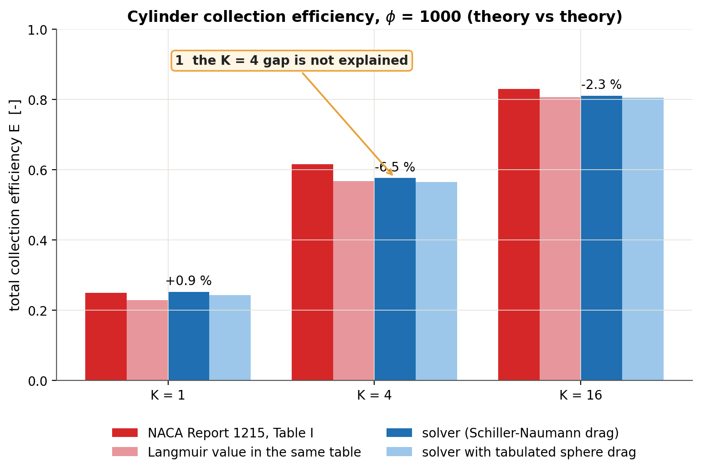
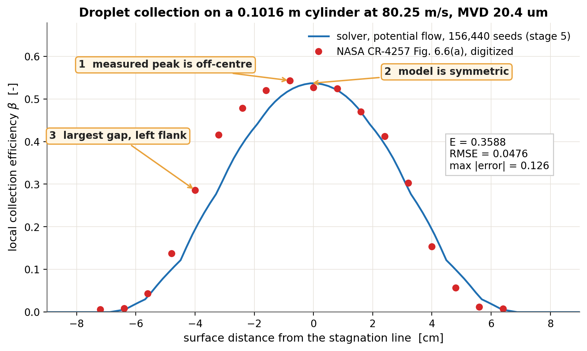
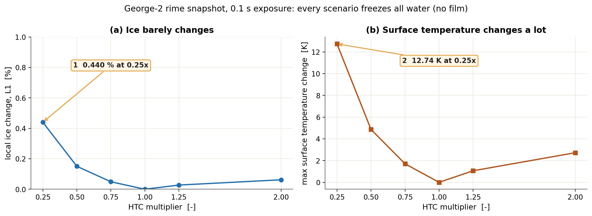
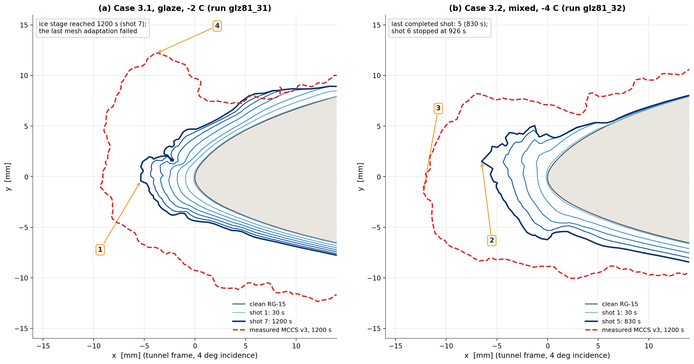
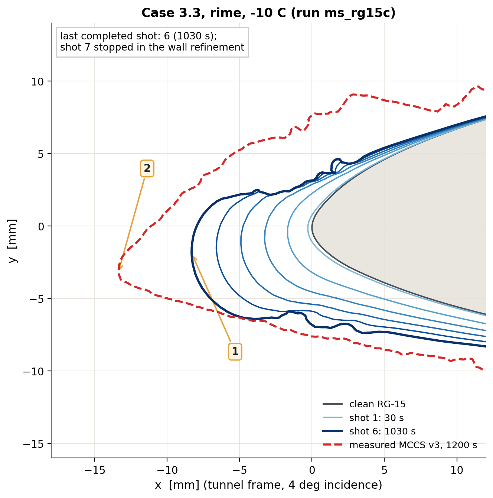
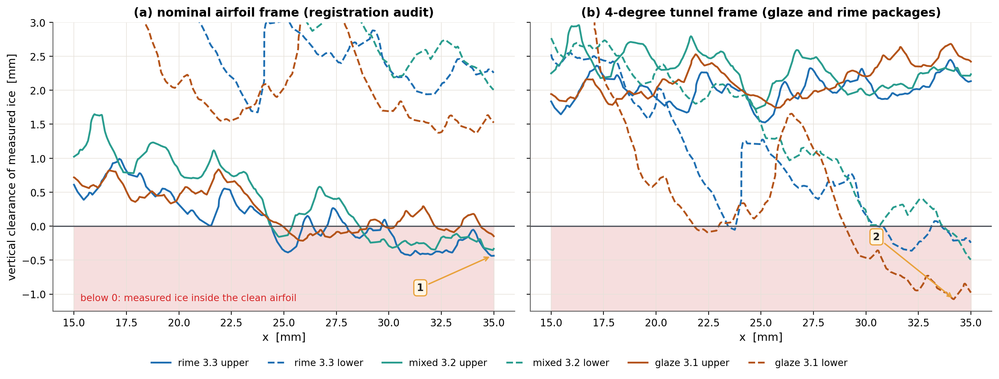

How we know it works (and what we do not know yet)
A solver can be correct as a program and still be wrong about ice. This page separates the two questions, shows the evidence the project has for each, and states plainly where it stands today: the numerics are well verified in many places, and no physical validation of predicted ice shapes has been achieved yet.
- Verification is not validation Basic
- The unit-test suite Basic
- Checks against exact solutions Intermediate
- Droplet collection against theory and experiment Intermediate
- Sensitivity studies on George-2 Intermediate
- The RG-15 ice-shape benchmark Advanced
- Prospective test plans Advanced
- What is still open Advanced
Verification is not validation Basic
Two different questions hide behind "does it work?".
- Verification: does the program solve the equations it claims to solve, correctly and with a known numerical error? You answer this with mathematics: exact solutions, refinement studies, conservation checks, independent re-implementations.
- Validation: are those equations the right description of real icing? You can only answer this with measurements: ice shapes, collection efficiencies, heat transfer measured in a tunnel, each with a known measurement uncertainty.
A model can pass every verification test and still predict the wrong ice, because a physical effect
is missing or a closure is wrong. The project's physics review says this in so many words:
"Conservation tests, numerical convergence and agreement with experiments are different requirements.
Passing one does not establish the others. No overall physical-validation claim is supported yet."
(docs/PHYSICS_REVIEW.md, introduction).
Verification asks "did we build the thing right?"; validation asks "did we build the right thing?".
This project has a lot of evidence for the first and, so far, only open comparisons for the second.
The documents are careful never to mix them: every result file carries flags like
"physical_validation": false or "experimental_validation_pass": false.
The unit-test suite Basic
The first line of defence is a suite of fast automated tests in tests/. They do not run
SU2 or any long computation; they check small pieces against hand-computable answers. The README
gives the command, run from the project root:
python -m unittest discover -s tests -vGitHub Actions runs the same suite on Windows and Linux with Python 3.11 and 3.12 (README). The suite was not run for this guide; the counts below come from reading the files.

tests/test_*.py) with
1,007 functions named test_..., grouped by subsystem from their file names. The grouping
is a keyword rule in _build/fig_validation.py (CATEGORIES), so a file that
touches two subsystems is counted once. The largest groups are orchestration and restart (236) and
ice growth and geometry (232): the parts with the most bookkeeping. Count from 2026-11-17; the
suite grows almost daily (the 2026-10-17 audit in docs/VALIDATION.md counted 127).The tests check things like: local and global water conservation, analytic phase-change limits,
restart equivalence (stop and resume gives the same bits), refusal of a changed sealed file, correct
unit conversion of SU2 wall fields, exact conservation of a front-merging fill
(test_front_merging), and the corner-growth rule (test_corner_growth, seven
tests). Many tests encode a past failure: for example
test_a_collinear_wall_vertex_is_never_filled_into_a_flat_element reproduces the defect
that stopped the case 3.2 run (docs/GLAZE_ROBUSTNESS.md, R41).
- A passing suite shows that each piece does what its author intended. It cannot show that the intention is physically right, and it does not exercise the full coupled campaign at production scale; that is what pilots and packages are for (Step 11).
Checks against exact solutions Intermediate
The strongest verification uses a problem whose exact answer is known in closed form. Three are shown in Figure 3.
Stefan freezing: ice growing on a cold wall
Liquid water at the melting point \(T_m\) sits on a wall held at \(T_\text{cold}\) = 263.15 K. Ice grows from the wall; the heat of fusion released at the ice-water interface must be conducted through the ice into the wall. With no airflow, evaporation or liquid heating, this one-dimensional problem (the one-phase Stefan problem) has an exact similarity solution: the thickness grows like the square root of time,
$$ s(t) = 2\lambda\sqrt{\alpha t}, \qquad \lambda\, e^{\lambda^2}\operatorname{erf}\lambda = \frac{c_i\,(T_m - T_\text{cold})}{L_f\sqrt{\pi}}, $$where \(\alpha = k/(\rho c_i)\) is the thermal diffusivity of ice (k = 2.2 W/m/K, ρ = 917 kg/m³), \(c_i\) its specific heat and \(L_f\) the latent heat. The right-hand side is the Stefan number divided by \(\sqrt\pi\); here St = 0.0629 and λ = 0.17557. The tool solves this with the production ice-column code and compares the thickness after 2 s.
rho, k, cold = 917., 2.2, 263.15
alpha = k/(rho*CI)
stefan = CI*(TM-cold)/LF
lam = brentq(lambda x: x*np.exp(x*x)*erf(x) - stefan/np.sqrt(np.pi), .00001, 1.)
initial_time, duration = 1., 2.
thickness = lambda t: 2*lam*np.sqrt(alpha*t)
...
for cells, steps in ((16, 40), (32, 80), (64, 160)): # refine depth and time together
...Starting at t = 1 s (the exact solution has zero thickness at t = 0, which no grid can hold) avoids
the singularity; the initial temperature is integrated to cell averages so the start is exact. Halving
the cell size and the time step together halves the error: 0.2703 %, 0.1348 %, 0.06733 %, which is
first-order convergence, as expected from the scheme. The mass residual is below 1.1 × 10⁻¹⁵ kg/m² and
the global energy residual below 2 × 10⁻¹⁰ J/m² at every level
(runs/stefan_growth_verification_001/report.json).
Film transport: water pushed along by air shear
With constant shear τ and no phase change, the thin-film equation reduces to a scalar conservation
law, \( h_t + \left(\tau h^2/(2\mu)\right)_s = 0 \), whose exact solution follows characteristics until
a shock forms at about 0.597 s. tools/verify_film.py compares the finite-volume cell
averages on a circle at 0.1 s: the L1 error falls from 0.719 % at 40 panels to 0.0896 % at 320, an
observed order of 1.000; mass error at most 8.7 × 10⁻¹⁹ kg/m
(runs/film_refinement_001/refinement.json).
Droplet seeding: how many seeds are enough
On a 16-panel polygon in a uniform stream the exact droplet flux on each panel is a projected
area. The production refinement loop doubles the seeds until the panel distribution changes by less
than 1 % twice in a row. It stopped at 4,096 seeds; the error against the exact flux was then 0.187 %
(panel L1) with a total-capture difference of -8.4 × 10⁻⁵
(runs/seed_refinement_analytic_001/verification.json).

_build/fig_validation.py.- The Stefan problem is planar pure-ice freezing with liquid exactly at Tm. It checks conduction, latent heat and the moving boundary; the report itself says "not airfoil experimental validation".
- The film test has no freezing and constant shear; the seed test has no flow deflection. Each checks one operator in isolation.
Droplet collection against theory and experiment Intermediate
Droplet collection is the one part of the chain that can be compared with experiment in isolation, because collection on a cylinder has been measured with dye-tracer methods and computed in classic NACA reports.
Theory: NACA Report 1215
NACA Report 1215 tabulates total collection efficiency E of cylinders as a function of the inertia
parameter K and the parameter φ. The solver's trajectories (potential flow, Schiller-Naumann drag)
reproduce K = 1 within 0.9 %, but fall 6.5 % short at K = 4 and 2.3 % at K = 16
(docs/VALIDATION.md, "Cylinder theoretical comparison"). An independent integrator
(DOP853, exact circle, separately written drag) agrees with the production code to 8.1 × 10⁻⁶, so the
gap is not a polygon or time-step error. Replacing the drag law by the historical sphere-drag table
(NACA TN 1397) the report cites does not close it either: E = 0.565 at K = 4, against 0.616 in the
report. The tabulated-drag values lie close to the older Langmuir column printed in the same table at K = 4
and 16; the project notes that this agreement "does not validate the NACA comparison".

runs/naca1215_tabulated_drag_001/study.json; data
data/naca1215_langmuir_comparison.csv).Experiment: NASA CR-4257 cylinder
NASA CR-4257 Figure 6.6(a) gives a measured local collection efficiency β around a 0.1016 m cylinder
at 80.25 m/s with a 20.4 µm median volumetric diameter, represented by seven mass-weighted bins. The
targeted package (docs/CYLINDER_TARGETED_RETURN.md) refined seeds locally, globally and
in trajectory step over five stages up to 156,440 seeds. Every predeclared numerical gate passed
(mixture changes below 1 %, every bin below 2 %; the largest change was 0.06 %). The comparison with
the measured curve is what remains:

runs/cylinder_targeted_return_001/report.json).
(1) The measured peak sits off the stagnation line and the curve is asymmetric.
(2) The model is symmetric by construction. (3) The biggest gap is on the left flank.
The comparison uses incompressible potential flow at Mach 0.24 (the original report used
compressible flow), no boundary layer, and no recovered measurement uncertainty; digitization bounds
are not measurement uncertainty. Hence "experimental_validation_pass": false.A pass needs a criterion, and a fair criterion needs the measurement uncertainty. Without it any
threshold would be chosen after seeing the result. The project's rule
(docs/PHYSICS_REVIEW.md, "Working rules") is to record failed comparisons and never
choose corrections "solely to reduce benchmark error".
Sensitivity studies on George-2 Intermediate
George-2 is a 0.30 m airfoil test case used for early rime runs. Its studies do not compare with experiment; they measure how much a result moves when a numerical or modelling choice moves. Three are worth knowing.
- Upstream inlet. The original droplet inlet at x = -0.8 m was too narrow and lost captures
outside its lower edge. Widening it at the same seed spacing recovered 3,732 impacts, 41.09 % of the
corrected captured mass. Against the x = -0.4 m baseline the panel mass and impact-energy
distributions then differ by 0.848 % and 0.851 % (L1)
(
runs/george_upstream_wide_return_001/INTERPRETATION.md). Lesson: check that no droplet hits the wall from the edge of the seeding band. The campaign collection stage applies such a check on every shot (validation.inlet_capture_auditincampaign.run_collection). - Heat-transfer coefficient (HTC) screen. Scaling the HTC of a saved George snapshot by 0.25 to 2 over 0.1 s of exposure (Figure 6).
- Heat-reference audit. The CFD gives a wall heat flux; the icing balance uses
\(h\,(T_s - T_\text{rec})\) with a recovery temperature. Reconstructing the flux with the recovery
reference changes it by -0.54 % for George and by -13.2 % for a hypothetical RG-15 glaze probe at the
melting point (
runs/heat_reference_audit_001/report.json). After reviewing SU2's energy equation, the project keeps h and adds recovery heating explicitly (docs/HEAT_TRANSFER_CONTRACT.md); the uniform recovery assumption itself is unvalidated.

runs/george_htc_sensitivity_001/report.json).
(1) Even at a quarter of the HTC the local ice changes by only 0.44 %, because (2) the
surface simply warms (by up to 12.7 K) while still freezing all the water: no film is retained in
any scenario. In this cold, supply-limited regime the ice mass cannot tell a good thermal closure from
a bad one. A partially freezing (glaze) experiment is needed to test it
(docs/PHYSICS_REVIEW.md, "Priorities").The RG-15 ice-shape benchmark Advanced
The independent target the project has chosen is the second AIAA Ice Prediction Workshop (IPW-2)
case set on the RG-15 airfoil: 0.30 m chord, 25 m/s, 4° incidence, 0.52 g/m³, 1,200 s, at three
temperatures: 3.1 glaze (-2 °C), 3.2 mixed (-4 °C) and 3.3 rime (-10 °C)
(data/rg15_ipw2/conditions.json). The measured outlines are "maximum combined
cross-sections" (MCCS): the outermost extent of the ice over several spanwise sections, not a mean
section (data/rg15_ipw2/README.md). The conditions file itself is marked
"ready_for_validation": false and lists five unresolved items, the first being coordinate
registration.
Predicted outlines, shot by shot

shot_NN/ice/surface.csv of runs glz81_31
and glz81_32); red dashed: measured MCCS v3 at 1,200 s (mccs_31.csv,
mccs_32.csv). (1) Case 3.1 at 1,200 s: the most upstream point is at -5.35 mm.
(2) Case 3.2's last completed shot is at 830 s, not 1,200 s, so its outline must not be read
as the final prediction. (3) The measured 3.2 ice reaches -12.3 mm. (4) The measured
3.1 outline has a large upper horn that the prediction does not form.
ms_rg15c, shots 1-6 to
1,030 s; measured outline data/rg15_ipw2/processed/rime_open_x35mm.csv).
(1) The predicted ice at 1,030 s reaches -8.3 mm. (2) The measured 1,200 s outline
reaches -13.4 mm. Shot 7 (1,030-1,200 s) was never run, so 170 s of growth is missing from the
prediction.Only case 3.1 has a predicted outline at the measured exposure time. Using the package's own frozen
metric code (compare() in the package's run.py, upstream of x = 35 mm) on
that outline gives, descriptively: symmetric RMS distance 3.40 mm, 95th percentile 6.13 mm, forward
extent 5.35 mm against 9.35 mm measured, and ice area 122.7 mm² against 351.1 mm² measured. The
measured references reproduce those written into the package plan (3.1: area 351 mm², forward extent
9.4 mm), which checks the computation. These numbers were computed for this guide; they are not a
returned result, and no verdict is attached. The run did not complete (its final adaptation
failed), so the plan's predeclared shape hypothesis H2 does not apply, and the registration question
below is unresolved.
The registration caveat
To compare a predicted outline with a measured one you must know where the measured outline sits
relative to the airfoil: its units, origin and angle. The CSV files carry no such metadata. The project
reads them as millimetres from the source paper's figure axes and applies no shift or rotation
(data/rg15_ipw2/processed/preparation.json). A consistency check then fails:

docs/RG15_REGISTRATION_AUDIT.md to the printed
digits (1). (b) In the 4° tunnel frame that the glaze and rime campaign packages use
(the airfoil rotated by -4°, tools/prepare_rg15_glaze_package.py), the upper surfaces
clear the wall, but the lower surfaces now penetrate, by up to 1.07 mm for glaze (2).
Panel (b) is an extra check computed for this guide, not part of the recorded audit.Neither frame makes the measured outlines consistent with the clean airfoil, so the registration is genuinely unknown, not just unrecorded. The audit also found that the experimental files were revised between v2 and v3 in a way that is not a rigid shift, and that a newer dataset uses a different clean contour that would remove most of the rime overlap. Its conclusion: "registration and geometry definition remain unresolved; do not infer a unique whole-outline shift or calibrate against CFD".
- Near the leading edge a 4° rotation about the origin moves a point 12 mm away by about 0.8 mm (12 mm × sin 4°); a translation offset is not excluded either. Until registration is settled, any sub-millimetre agreement or disagreement means nothing, and even millimetre-scale differences have no stated uncertainty.
- The MCCS is an envelope over span; a 2-D prediction is one section. The envelope is larger by construction.
- Ice mass is almost the same in all three cases (Step 11, Figure 3), so the differences that matter are in shape and in where the water freezes.
Prospective test plans Advanced
Every expensive run is planned before it starts. VALIDATION_RUN_PLAN.txt at the project
root lists the user-run tests in execution order, and each frozen package carries its own
EXPERIMENT_PLAN.txt whose hash is in the package manifest. A plan entry must state the
scientific question, the hypothesis, what is held fixed and what is varied, the measurable outcomes,
numerical criteria written down before the run with their rationale, how pass, fail and
inconclusive will be read, the runtime, the files to return, the prerequisites and the stopping rules
(AGENTS.md). Criteria are never invented after a result is seen.
Here is the real entry for the next rime run, ms_rg15d (trimmed):
READY 2026-11-17 — RG-15 case 3.3 rime campaign, version d (ms_rg15d)
QUESTION AND COMPARISON
Can the solid cavity fix carry the RG-15 rime campaign through the shot-6
adaptation at 1,030 s, start shot 7 from a conforming fluid/solid pair, and
complete all seven shots to 1,200 s with the existing numerical gates?
CONTROLS AND VARIATION
- Every solver input and the runner are byte-identical to the c package
rg15_multishot_nibi_20261114. Code revision is the varied factor.
HYPOTHESES AND MEASURES
- H1, completion: all seven shots seal, results/summary.json ends at 1,200 s, ...
- H2, targeted regression: shot_06/adapt seals, the solid boundary covers
every refined panel, and the maximum eligible wall-panel length after
refinement divided by target is <= 2.5 (the configured hard limit). ...
- M2: minimum scaled Jacobian >= 0.10 ...
- H4, descriptive: cumulative ice remains within 3% of ms_rg15 at 30, 230,
430 and 630 s (0.00489443, 0.0371816, 0.069175 and 0.100779 kg/m). ...
INTERPRETATION
- Pass if H1, H2 and M1-M3 pass. H0/H4 deviations trigger review of the
returned loads, collection and adaptation records, without changing gates.
- A node, filesystem or allocation failure, repeated MPI launch fault or
exhausted walltime chain without a numerical fault is inconclusive.
STOP AND RETURN
- Stop on a failed pilot, a FAILED or STOPPED marker, a numerical gate
failure, or a shot past 300,000 iterations without CFD acceptance.Notice what this plan tests: completion and a specific code fix, not agreement with the
experiment. That is honest about what the run can decide. The glaze package plans add a shape
question (Q2) with screening bands, and say explicitly that "the outlines carry no quantified
registration or measurement uncertainty, so these screening bands are not a validation acceptance".
The v8.1 return shows the discipline at work: hypothesis H6 failed "as written" in both cases, was
diagnosed as a poorly chosen criterion, and was restated for the next package only; "The v8.1
verdict is unchanged" (docs/PHYSICS_REVIEW.md, 2026-11-16).
What is still open Advanced
The physics review keeps a priority table of governing-model gaps. Shortened from
docs/PHYSICS_REVIEW.md, "Priorities and evidence required":
| Priority | Issue | What is still required |
|---|---|---|
| 1 | Thermal phase closure | Glaze path has film enthalpy, crusts, melting and refreezing, vapour exchange and runoff outlets; still missing for a full claim: partial-cell fronts, rough-ice HTC, dry-ice sublimation, detachment physics and independent glaze validation. |
| 1 | Heat-transfer uncertainty | HTC sensitivity to mesh, wall temperature, transition and roughness; an independent thermal benchmark; no tuning of HTC to ice shapes. |
| 1 | Droplet-model discrepancies | Resolve or quantify disagreement with independent impingement data (Figures 4 and 5). Seed convergence cannot remove drag-law or flow-model error. |
| 1 | Layered solid geometry | Preserve substrate volume and ice mass and enthalpy as the surface moves; verify curved geometry and remesh transfer. |
| 2 | Surface mass exchange | Dry CFD-visible ice has no vapour exchange; the Lewis-one analogy is unvalidated here. |
| 2 | Film flow limits | Thin-film assumptions; rivulets; a predictive detachment force balance (exits are prescribed or placed at sharp corners). |
| 2 | Ice material | Density, conductivity and roughness are prescribed constants, not predictions. |
| 3 | Droplet extensions | Splash, breakup and large drops; the opt-in LEWICE mass-loss correlation is unvalidated here. |
And the benchmark status, in one table:
| Evidence | Kind | Status |
|---|---|---|
| Stefan, film, seed flux | exact solutions | verified, first order as designed |
| Cylinder seed/step refinement | numerical uncertainty | all predeclared gates passed |
| NACA 1215 | theory | -6.5 % at K = 4, unexplained |
| NASA CR-4257 cylinder | experiment | RMSE 0.048, asymmetric data, no uncertainty: no pass |
| George-2 studies | sensitivity | bounded; cold case cannot discriminate thermal closures |
| RG-15 3.1 / 3.2 / 3.3 | experiment | no run completed; registration unresolved; no comparison verdict |
The numerical building blocks are tested against exact answers and converge as they should; mass and energy are conserved to round-off; campaigns are reproducible and auditable. What is not yet shown is that the predicted ice looks like real ice. The first full RG-15 campaigns stopped on defects that have since been fixed (and the fixes checked offline), the measured outlines cannot yet be placed reliably on the airfoil, and the predicted glaze outlines that exist are visibly smaller than the measured envelopes. The project therefore makes no physical-validation claim, and this guide does not either.